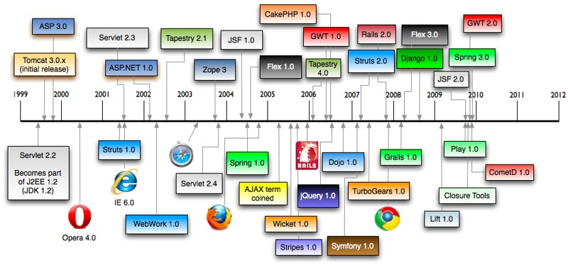
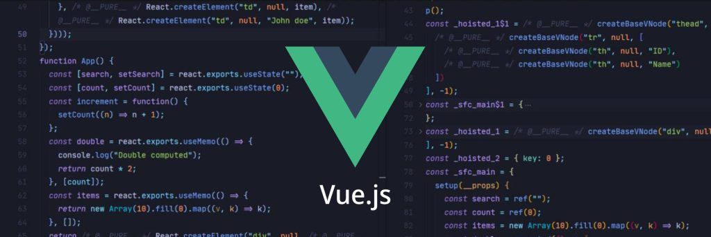

🚀 The Epic Saga of Web Frameworks: From Clunky Code to AI Superpowers
What's up, code warriors and pixel pushers! 👋 Ready for a wild ride through the evolution of web frameworks?
Grab your favourite caffeinated beverage ☕️, because we're about to blast from the past to the future faster than you can say "npm install react"!
Let's dive into the thrilling, frustrating, and sometimes downright bizarre world of web development. 🏄‍♂️💻
From the dark ages of table-based layouts to the shining future of AI-assisted coding, we've come a long way.
This journey has been filled with triumphs, tears, and more deprecated APIs than we care to remember.
So, strap in, fellow developers, as we embark on this nostalgic yet forward-looking adventure!

🦕 The Prehistoric Era: Vanilla JavaScript and the DOM Wars
Picture this: it's the early 2000s. Britney Spears is topping the charts, flip phones are the height of tech,
and developers are battling with vanilla JavaScript like it's a ferocious T-Rex. 🦖
// Vanilla JS: As elegant as a bull in a china shop
document.addEventListener('DOMContentLoaded', function() {
var button = document.getElementById('myButton');
var content = document.getElementById('content');
button.addEventListener('click', function() {
if (content.style.display === 'none') {
content.style.display = 'block';
} else {
content.style.display = 'none';
}
});
});
Spoiler alert: This code is about as pretty as a website built with marquee tags. But hey, it worked... when Mercury wasn't in retrograde. 🔮
Developers spent more time fighting browser inconsistencies than actually building cool stuff.
Internet Explorer was the final boss that nobody wanted to face. 😱
Remember the joy of writing separate code for IE6, IE7, Firefox, and if you were really adventurous,
that new browser called "Chrome"? Cross-browser compatibility was the stuff of nightmares, and CSS hacks were our teddy bears.
The Challenges of Ye Olde Vanilla JS
Browser wars fiercer than Game of Thrones 🗡️
"Object Expected" errors haunting dreams 👻
Callback hell deeper than the Mariana Trench 🌊
Performance issues on mighty 512MB RAM machines 🐌
The dreaded "Works on my machine" syndrome 🖥️
Debugging with alert() because console.log wasn't cool yet 🚨
🥠Suggested Videos
🔠jQuery: The Challenges of Ye Olde Vanilla JS
Then, in 2006, jQuery rolled up like a food truck in a desert of despair. Suddenly, developers could manipulate the DOM and make AJAX calls easier than ordering a cheeseburger. 🍔
jQuery was the superhero we needed, swooping in to save us from browser inconsistencies and verbose vanilla JavaScript. It was like finding an oasis in the desert of web development – refreshing, life-saving, and almost too good to be true.
// jQuery: Making JavaScript great again (before it was cool)
$(document).ready(function() {
$('#myButton').click(function() {
$('#content').toggle();
});
});
jQuery didn't just make coding easier; it made it fun! 🉠Suddenly, you could chain methods like a boss:
jQuery was like the Swiss Army knife of web development. It sliced, it diced, it made julienne fries! But like all good things, its reign couldn't last forever. 🗡️
jQuery plugins became the new frontier. Need a slider? There's a plugin for that. Want a fancy lightbox? Plugin. Datepicker? You guessed it – plugin. The jQuery plugin ecosystem exploded faster than you could say "$(this)".
🥠Suggested Videos
🌟 The SPA Universe Expands: AngularJS and Backbone.js
As web apps got more complex, developers needed more structure. Enter AngularJS and Backbone.js, the architects of the Single Page Application (SPA) revolution. 🏗️
These frameworks brought structure to our chaotic JavaScript world, introducing concepts like MVC (Model-View-Controller) and MVVM (Model-View-ViewModel) to front-end development. Suddenly, we were building web apps that felt more like desktop applications, and our backends breathed a sigh of relief as they offloaded more work to the client-side.
// AngularJS: Because who doesn't love a good $scope?
angular.module('myApp', [])
.controller('MyController', function($scope) {
$scope.message = 'Hello, AngularJS!';
$scope.updateMessage = function() {
$scope.message = 'AngularJS is magical!';
};
});
AngularJS was like that one friend who's super smart but also a bit... extra. It solved problems we didn't even know we had, but also introduced concepts that made our brains hurt. 🤯
Backbone.js: Bringing Structure to Chaos
Meanwhile, Backbone.js was like the Marie Kondo of JavaScript frameworks, helping developers tidy up their spaghetti code into neat little models, views, and routers. 🍝➡️📦
// Backbone.js: Sparking joy in JavaScript since 2010
var Todo = Backbone.Model.extend({
defaults: {
title: '',
completed: false
}
});
var TodoView = Backbone.View.extend({
tagName: 'li',
render: function() {
this.$el.html(this.model.get('title'));
return this;
}
});
var TodoRouter = Backbone.Router.extend({
routes: {
"todos/:id": "getTodo"
},
getTodo: function(id) {
// Logic to fetch and display a specific todo
}
});
Backbone.js taught us that with great power comes great responsibility... and a lot of boilerplate code. 🦸‍♂️
Backbone.js was minimalistic yet powerful. It gave structure without being overly opinionated, allowing developers to build large-scale applications without losing their minds. It was the JavaScript equivalent of a well-organized toolbox – everything had its place, but you still had to know how to use the tools.
🥠Suggested Videos
👑 The Holy Trinity: React, Angular, and Vue
Just when we thought we had this web development thing figured out, the component-based framework revolution kicked down the door. 🚪💥
These frameworks didn't just change how we built web apps; they changed how we thought about web development entirely. The focus shifted from manipulating the DOM to managing application state and composing reusable components.
Framework
Year
Created By
Killer Feature
React
2013
Facebook
Virtual DOM
Angular
2016
Google
Full-featured platform
Vue
2014
Evan You
Progressive framework
React: Facebook's Gift to Stressed Developers
React swept in like a superhero, saving us from the villainous mutating state and tangled DOM manipulations. It introduced JSX, which was like HTML and JavaScript had a beautiful baby. 👶
// React: Making UI great again
function Welcome(props) {
return <h1>Hello, {props.name}</h1>;
}
function App() {
return (
<div>
<Welcome name="Alice" />
<Welcome name="Bob" />
</div>
);
}
ReactDOM.render(<App />, document.getElementById('root'));
React didn't just change the game; it flipped the board, rewrote the rules, and made everyone else play catch-up. 🏃‍♂️💨
Angular: The Full-Stack Swiss Army Knife
Angular (the artist formerly known as AngularJS) came back with a vengeance in 2016. It was like the framework equivalent of Iron Man's suit – powerful, full-featured, but with a bit of a learning curve. 🦾
// Angular: Because sometimes, you need a rocket launcher to swat a fly
import { Component } from '@angular/core';
@Component({
selector: 'app-root',
template: `
<h1>{{title}}</h1>
<p>Welcome to {{title}}!</p>
<button (click)="updateTitle()">Update Title</button>
`
})
export class AppComponent {
title = 'My Angular App';
updateTitle() {
this.title = 'Angular is Awesome!';
}
}
Angular: When you absolutely, positively need to use every programming pattern known to humanity in a single framework. ğŸ
Vue: The People's Champion

Vue.js slid into the scene like the cool new kid at school. It took the best parts of React and Angular, mixed them up, and served a cocktail of simplicity and power. 🍹
Vue was like the Goldilocks of frameworks – not too simple, not too complex, but just right for many developers. 👌
🥠Suggested Videos
🏗️ JAMstack: Making the Web Static (In a Good Way)
Just when we thought things couldn't get any crazier, JAMstack crashed the party. "What if we made websites fast, secure, and developer-friendly?" And lo, a thousand Gatsby sites bloomed. 🌸
JAMstack (JavaScript, APIs, and Markup) turned the traditional web architecture on its head. Static site generators like Gatsby and Next.js showed us that static doesn't mean boring or limited. These tools combined the performance benefits of static sites with the dynamic capabilities of modern web apps.
JAMstack wasn't just a new way to build websites; it was a whole new philosophy. It combined the best of static sites with the power of APIs and modern build tools. 🛠️
Developers could now build blazing-fast websites with dynamic content, all while improving security and scalability. CDNs became our new best friends, and the idea of "serverless" started to sound less like science fiction and more like the future of web development.
🥠Suggested Videos
🤖 AI-Assisted Development: Your New Pair Programming Bestie
Just when we thought web development couldn't get any cooler, AI crashed the party. GitHub Copilot slid into our IDEs like, "Hey dev, need help with that function?" And suddenly, we're all living in the future. 🔮
AI-assisted coding tools are changing the game, acting like a super-smart autocomplete on steroids. They can suggest entire functions, help with boilerplate code, and even assist in solving complex algorithms. It's like having a senior developer looking over your shoulder, but without the coffee breath.
But Copilot isn't alone in this AI revolution. We've got:
Tabnine for code completion on steroids 💪
GPT-3 powered apps that can generate entire webpages from a description 🗣️
AI-driven code refactoring tools that make your spaghetti code look like fine dining 🍝➡️🍽️
These tools are not just about writing code faster; they're about augmenting human creativity and problem-solving. They can help with everything from suggesting variable names to generating unit tests. The future of coding might involve a lot more "reviewing and tweaking" than "writing from scratch".
With great AI power comes great responsibility. And occasionally, hilariously wrong code suggestions. Always review your AI-generated code, folks! 👀
🥠Suggested Videos
🔮 What's Next? Web Development in 3023
Buckle up, because the future of web development is looking wilder than a sci-fi movie directed by a caffeinated squirrel! 🐿️☕
As we peer into our crystal ball (which is probably just a really advanced VR headset), we see a future where the lines between web, mobile, and native applications are increasingly blurred. WebAssembly is gaining traction, promising near-native performance for web applications. Who knows, maybe we'll be coding in JSON telepathically while our AI assistants handle the grunt work!
🧠Neuralink-powered websites that respond to your thoughts
🌈 CSS that writes itself based on your mood
☕ JavaScript engines that run on actual coffee
🕹️ Quantum computing browsers that load pages before you even think of visiting them
🤖 AI frameworks that update themselves and fix bugs while you sleep
🌠Web apps that seamlessly transition between devices, following you from your smartwatch to your car's HUD
🔠Blockchain-based authentication making passwords a thing of the past
ğŸ AR/VR interfaces becoming the norm for web browsing
The future of web development is so bright, you're gonna need shades. And probably a computer science degree from Mars University. 👽🎓
And there you have it, folks! We've blasted through the history of web frameworks faster than a Node.js event loop. Remember, in the world of web dev, the only constant is change – and the occasional "undefined is not a function" error. 😅
As we stand on the shoulders of JavaScript giants, let's take a moment to appreciate how far we've come. From the days of alert debugging to the era of AI pair programming, our journey has been nothing short of extraordinary. As we look ahead, it's clear that the world of web development is bound to become even more exciting and unpredictable. Whether you're a seasoned developer or just starting out, there’s always something new to learn, explore, and create. So keep experimenting, keep pushing boundaries, and above all, keep having fun with code.
Here’s to the future of web development – a future where the web is not just a tool, but a playground of endless possibilities. From AI-assisted development environments to immersive virtual experiences, the road ahead is full of innovation and creativity. And who knows? Maybe one day we'll be reminiscing about the good old days when HTML and CSS were the most complicated things on the internet.
Until then, keep coding, keep dreaming, and never stop building. After all, the future is what we make of it, one line of code at a time. 🌟💻🚀
And that’s a wrap on our journey through the past, present, and speculative future of web development! Whether you're prepping for the next big thing or just enjoying the ride, remember that the web is constantly evolving – and so are we. Here’s to the next thousand years of innovation, community, and digital magic. Stay curious, stay inspired, and keep creating the web we all want to see. 🌐✨
Meet The Team
This blog website was created by our amazing team as a home assignment for the Web Development course. 🎓